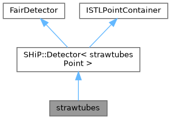

#include <strawtubes.h>


Public Member Functions | |
| strawtubes (const char *Name, Bool_t Active) | |
| strawtubes (std::string medium) | |
| strawtubes () | |
| Bool_t | ProcessHits (FairVolume *v=0) override |
| void | SetzPositions (Double_t z1, Double_t z2, Double_t z3, Double_t z4) |
| void | SetApertureArea (Double_t width, Double_t height) |
| void | SetStrawDiameter (Double_t outer_straw_diameter, Double_t wall_thickness) |
| void | SetStrawPitch (Double_t straw_pitch, Double_t layer_offset) |
| void | SetDeltazLayer (Double_t delta_z_layer) |
| void | SetStereoAngle (Double_t stereo_angle) |
| void | SetWireThickness (Double_t wire_thickness) |
| void | SetFrameMaterial (TString frame_material) |
| void | SetDeltazView (Double_t delta_z_view) |
| void | SetStationEnvelope (Double_t x, Double_t y, Double_t z) |
| void | SetStrawResolution (Double_t a, Double_t b) |
| Double_t | StrawVdrift () |
| Double_t | StrawSigmaSpatial () |
| void | ConstructGeometry () override |
 Public Member Functions inherited from SHiP::Detector< strawtubesPoint > Public Member Functions inherited from SHiP::Detector< strawtubesPoint > | |
| Detector ()=default | |
| Detector (const char *Name, Bool_t Active, Int_t detID) | |
| Detector (const char *Name, Bool_t Active) | |
| ~Detector () override=default | |
| strawtubesPoint * | AddHit (Args &&... args) |
| void | ConstructGeometry () override=0 |
| void | Initialize () override |
| void | Reset () override |
| void | EndOfEvent () override |
| void | Register () override |
| TClonesArray * | GetCollection (Int_t iColl) const override |
| void | UpdatePointTrackIndices (const std::map< Int_t, Int_t > &indexMap) override |
| Update track indices in point collection after track filtering. | |
| void | SetSpecialPhysicsCuts () override |
| void | FinishPrimary () override |
| void | FinishRun () override |
| void | BeginPrimary () override |
| void | PostTrack () override |
| void | PreTrack () override |
| void | BeginEvent () override |
| void | CopyClones (TClonesArray *cl1, TClonesArray *cl2, Int_t offset) override |
| Public Member Functions inherited from ISTLPointContainer | |
| virtual void | UpdatePointTrackIndices (const std::map< Int_t, Int_t > &indexMap)=0 |
| Update track indices in point collection after track filtering. | |
| virtual | ~ISTLPointContainer ()=default |
Static Public Member Functions | |
| static std::tuple< Int_t, Int_t, Int_t, Int_t > | StrawDecode (Int_t detID) |
| static void | StrawEndPoints (Int_t detID, TVector3 &top, TVector3 &bot) |
Private Member Functions | |
| strawtubes (const strawtubes &)=delete | |
| vacuum box medium | |
| strawtubes & | operator= (const strawtubes &)=delete |
Private Attributes | |
| Double_t | f_T1_z |
| Double_t | f_T2_z |
| z-position of tracking station 1 | |
| Double_t | f_T3_z |
| z-position of tracking station 2 | |
| Double_t | f_T4_z |
| z-position of tracking station 3 | |
| Double_t | f_aperture_width |
| z-position of tracking station 4 | |
| Double_t | f_aperture_height |
| Aperture width (x) | |
| Double_t | f_inner_straw_diameter |
| Aperture height (y) | |
| Double_t | f_outer_straw_diameter |
| Inner Straw diameter. | |
| Double_t | f_straw_pitch |
| Outer Straw diameter. | |
| Double_t | f_offset_layer |
| Distance (y) between straws in a layer. | |
| Double_t | f_delta_z_layer |
| Offset (y) of straws between layers. | |
| Double_t | f_view_angle |
| Distance (z) between layers. | |
| Double_t | f_wire_thickness |
| Stereo view angle. | |
| TString | f_frame_material |
| Sense wire thickness. | |
| Double_t | f_delta_z_view |
| Structure frame material. | |
| Double_t | f_station_width |
| Distance (z) between stereo views. | |
| Double_t | f_station_height |
| Station envelope width (x) | |
| Double_t | f_station_length |
| Station envelope height (y) | |
| Double_t | v_drift |
| Station envelope length (z) | |
| Double_t | sigma_spatial |
| drift velocity | |
| std::string | fMedium |
| spatial resolution | |
Additional Inherited Members | |
| Protected Attributes inherited from SHiP::Detector< strawtubesPoint > | |
| Int_t | fEventID |
| Int_t | fTrackID |
| event index | |
| Int_t | fVolumeID |
| track index | |
| TLorentzVector | fPos |
| volume id | |
| TLorentzVector | fMom |
| position at entrance | |
| Double_t | fTime |
| momentum at entrance | |
| Double_t | fLength |
| time | |
| Double_t | fELoss |
| length | |
| std::vector< strawtubesPoint > * | fDetPoints |
| energy loss | |
| TGeoVolume * | fDetector |
Detailed Description
Definition at line 20 of file strawtubes.h.
Constructor & Destructor Documentation
◆ strawtubes() [1/4]
| strawtubes::strawtubes | ( | const char * | Name, |
| Bool_t | Active | ||
| ) |
Name : Detector Name Active: kTRUE for active detectors (ProcessHits() will be called) kFALSE for inactive detectors
Definition at line 50 of file strawtubes.cxx.
◆ strawtubes() [2/4]
|
explicit |
Definition at line 47 of file strawtubes.cxx.
◆ strawtubes() [3/4]
| strawtubes::strawtubes | ( | ) |
default constructor
Definition at line 44 of file strawtubes.cxx.
◆ strawtubes() [4/4]
|
privatedelete |
vacuum box medium
container for data points
Member Function Documentation
◆ ConstructGeometry()
|
overridevirtual |
Create the detector geometry
If you are using the standard ASCII input for the geometry just copy this and use it for your detector, otherwise you can implement here you own way of constructing the geometry.
Implements SHiP::Detector< strawtubesPoint >.
Definition at line 184 of file strawtubes.cxx.
◆ operator=()
|
privatedelete |
◆ ProcessHits()
|
override |
this method is called for each step during simulation (see FairMCApplication::Stepping())
This method is called from the MC stepping
Definition at line 53 of file strawtubes.cxx.
◆ SetApertureArea()
| void strawtubes::SetApertureArea | ( | Double_t | width, |
| Double_t | height | ||
| ) |
Aperture width (x)
Aperture height (y)
Definition at line 141 of file strawtubes.cxx.
◆ SetDeltazLayer()
| void strawtubes::SetDeltazLayer | ( | Double_t | delta_z_layer | ) |
Distance (z) between layers
Definition at line 158 of file strawtubes.cxx.
◆ SetDeltazView()
| void strawtubes::SetDeltazView | ( | Double_t | delta_z_view | ) |
Distance (z) between stereo views
Definition at line 170 of file strawtubes.cxx.
◆ SetFrameMaterial()
| void strawtubes::SetFrameMaterial | ( | TString | frame_material | ) |
Structure frame material
Definition at line 174 of file strawtubes.cxx.
◆ SetStationEnvelope()
| void strawtubes::SetStationEnvelope | ( | Double_t | x, |
| Double_t | y, | ||
| Double_t | z | ||
| ) |
Station envelope width (x)
Station envelope height (y)
Station envelope length (z)
Definition at line 178 of file strawtubes.cxx.
◆ SetStereoAngle()
| void strawtubes::SetStereoAngle | ( | Double_t | stereo_angle | ) |
Stereo view angle
Definition at line 162 of file strawtubes.cxx.
◆ SetStrawDiameter()
| void strawtubes::SetStrawDiameter | ( | Double_t | outer_straw_diameter, |
| Double_t | wall_thickness | ||
| ) |
Outer straw diameter
Inner straw diameter
Definition at line 146 of file strawtubes.cxx.
◆ SetStrawPitch()
| void strawtubes::SetStrawPitch | ( | Double_t | straw_pitch, |
| Double_t | layer_offset | ||
| ) |
Distance (y) between straws in a layer
Offset (y) of straws between layers
Definition at line 153 of file strawtubes.cxx.
◆ SetStrawResolution()
|
inline |
Definition at line 51 of file strawtubes.h.
◆ SetWireThickness()
| void strawtubes::SetWireThickness | ( | Double_t | wire_thickness | ) |
Sense wire thickness
Definition at line 166 of file strawtubes.cxx.
◆ SetzPositions()
| void strawtubes::SetzPositions | ( | Double_t | z1, |
| Double_t | z2, | ||
| Double_t | z3, | ||
| Double_t | z4 | ||
| ) |
◆ StrawDecode()
|
static |
Definition at line 421 of file strawtubes.cxx.
◆ StrawEndPoints()
|
static |
Definition at line 443 of file strawtubes.cxx.
◆ StrawSigmaSpatial()
|
inline |
Definition at line 56 of file strawtubes.h.
◆ StrawVdrift()
|
inline |
Definition at line 55 of file strawtubes.h.
Member Data Documentation
◆ f_aperture_height
|
private |
Aperture width (x)
Definition at line 70 of file strawtubes.h.
◆ f_aperture_width
|
private |
z-position of tracking station 4
Definition at line 69 of file strawtubes.h.
◆ f_delta_z_layer
|
private |
Offset (y) of straws between layers.
Definition at line 75 of file strawtubes.h.
◆ f_delta_z_view
|
private |
Structure frame material.
Definition at line 79 of file strawtubes.h.
◆ f_frame_material
|
private |
Sense wire thickness.
Definition at line 78 of file strawtubes.h.
◆ f_inner_straw_diameter
|
private |
Aperture height (y)
Definition at line 71 of file strawtubes.h.
◆ f_offset_layer
|
private |
Distance (y) between straws in a layer.
Definition at line 74 of file strawtubes.h.
◆ f_outer_straw_diameter
|
private |
Inner Straw diameter.
Definition at line 72 of file strawtubes.h.
◆ f_station_height
|
private |
Station envelope width (x)
Definition at line 81 of file strawtubes.h.
◆ f_station_length
|
private |
Station envelope height (y)
Definition at line 82 of file strawtubes.h.
◆ f_station_width
|
private |
Distance (z) between stereo views.
Definition at line 80 of file strawtubes.h.
◆ f_straw_pitch
|
private |
Outer Straw diameter.
Definition at line 73 of file strawtubes.h.
◆ f_T1_z
|
private |
Track information to be stored until the track leaves the active volume.
Definition at line 65 of file strawtubes.h.
◆ f_T2_z
|
private |
z-position of tracking station 1
Definition at line 66 of file strawtubes.h.
◆ f_T3_z
|
private |
z-position of tracking station 2
Definition at line 67 of file strawtubes.h.
◆ f_T4_z
|
private |
z-position of tracking station 3
Definition at line 68 of file strawtubes.h.
◆ f_view_angle
|
private |
Distance (z) between layers.
Definition at line 76 of file strawtubes.h.
◆ f_wire_thickness
|
private |
Stereo view angle.
Definition at line 77 of file strawtubes.h.
◆ fMedium
|
private |
spatial resolution
Definition at line 85 of file strawtubes.h.
◆ sigma_spatial
|
private |
drift velocity
Definition at line 84 of file strawtubes.h.
◆ v_drift
|
private |
Station envelope length (z)
Definition at line 83 of file strawtubes.h.
The documentation for this class was generated from the following files:
- strawtubes/strawtubes.h
- strawtubes/strawtubes.cxx